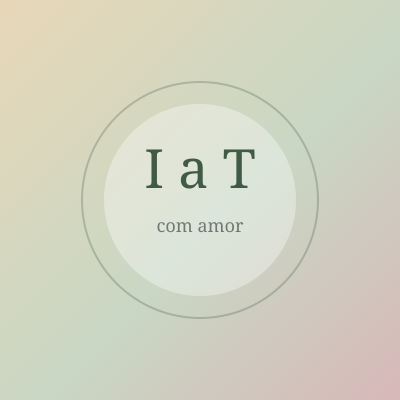

Dia especial
Feliz aniversário, Ivone
Hoje o mundo ganhou você — e eu ganhei a melhor mãe do mundo. Com todo o meu amor, Thomas.
Dia especial
Hoje o mundo ganhou você — e eu ganhei a melhor mãe do mundo. Com todo o meu amor, Thomas.
Cantinho da Ivone e do Osvaldo
Um abraço em forma de página — feito com amor pelo seu filho Thomas, para a paz de vocês.
Antes de dormir
Três passos suaves. Sem pressa. Só o necessário para o coração sossegar.
Coloque para tocar, abaixe um pouco o volume e feche os olhos. Não precisa fazer nada — só ouvir.
Acompanhe o círculo. Um minuto basta para soltar o dia.
Respire sem pressa.
Prontos para descansar. Vocês são profundamente amados. 🤍
Mensagens do horário
· Mensagens de bom dia, boa tarde e boa noite conforme o horário.
Reflexão bíblica do dia
Cuidado com a saúde
Informe peso e altura para ver o índice de massa corporal, uma estimativa de gordura corporal e a quantidade de água recomendada. Isto é orientação geral — não substitui consulta médica.
Estimativas educativas. Em caso de dúvida, procure um profissional de saúde.
Cardápio da semana
Escolha o resultado da calculadora (ou o perfil desejado) para ver um menu de 7 dias e dicas de preparo.
Momento de oração
Respire devagar e entregue suas preocupações.
Leitura espírita

Do seu filho para vocês
Caderno pessoal
Registre três bênçãos deste dia. Elas ficam salvas somente neste aparelho.
Entregar e confiar
Escreva algo que deseja entregar em prece hoje.
Pausa de serenidade
Acompanhe o círculo. Inspire devagar, segure suavemente e solte o ar sem pressa.
Todo amanhecer oferece uma nova oportunidade de fazer o bem.
Perdoar é libertar o coração do peso que já não precisa carregar.
Cada escolha amorosa é um pequeno passo na caminhada espiritual.
A caridade começa nas atitudes simples do cotidiano.
“A verdadeira felicidade nasce da paz na consciência e do bem que fazemos.”
Ivone e Osvaldo, que este cantinho sempre lembre vocês de que são profundamente amados, importantes e nunca estão sozinhos.
Com todo o amor, Thomas.